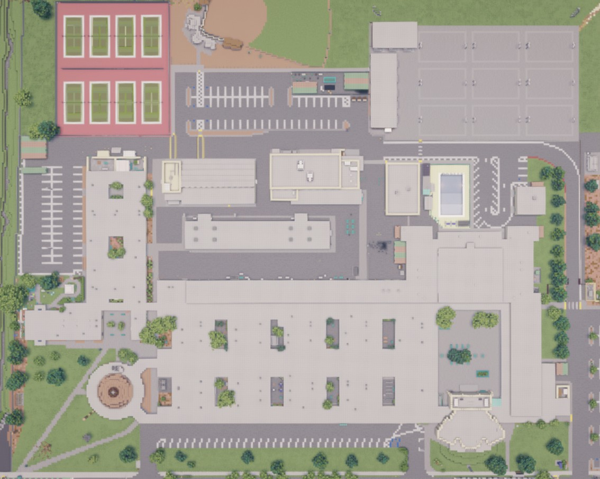
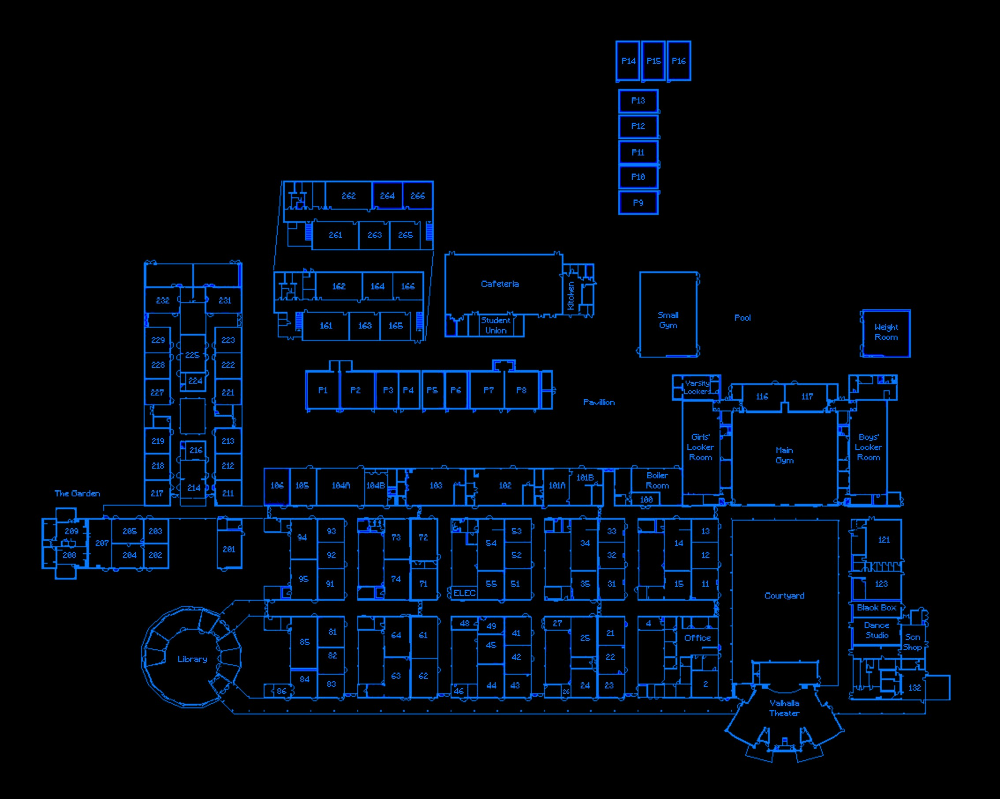
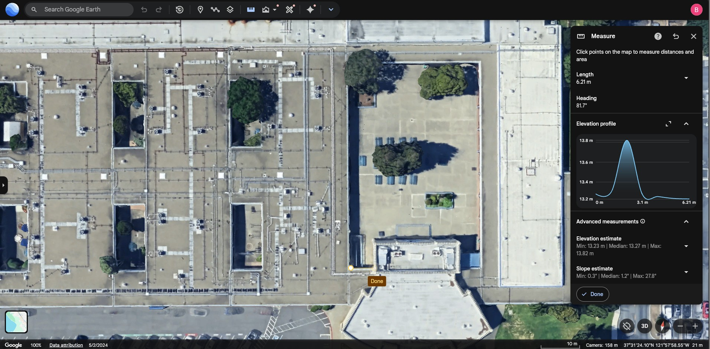
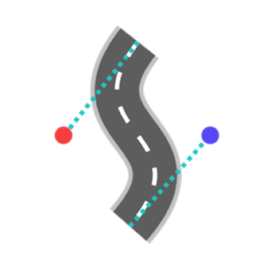
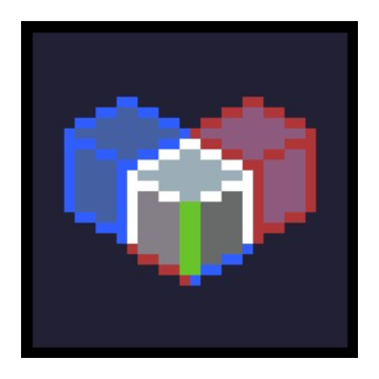

Made at a 1:1 Scale
Shaders: Complementary Reimagined
2025 / 2026 Irvington Map


How We Did It
It took us three years to realize that Google Earth provides altitude data.
STEP 1
Measurements
We used Google Earth to measure distances and altitudes in meters, then translated every reading into blocks at a 1:1 scale.

STEP 2
Visual References
We worked with Irvington students and staff to photograph and film rooms across campus, so every interior matches the real thing.

STEP 3
Construction
We used WorldEdit and CurveBuilding to construct the campus, then Litematica and MapArtCraft to place accurate map art throughout.

WorldEdit
In-game map editor for fast block placement and large structures.

CurveBuilding WorldEdit add-on for laying structures along smooth Bézier curves.
Litematica Schematic tool for planning, previewing and placing builds precisely. MapArtCraft Converts images into block layouts for in-game map art.Those Who Built It
Somehow, I acquired the blueprints for the school.
Main Builders
- Brandon Tse founder/interiors/exteriors/outreach
- Christopher Huanginteriors/exteriors/outreach
- Neriah Ye interiors
- Caden Chatkara interiors
- Daniel Ti interiors
- Kaia Liu interiors
Other Contributors
- Sarvin Basnyat interiors
- Dylan Kwok blueprints
- April Lee interiors
- Ishaan Mukerjee reference footage
- Kyle Tsai server host/motivational support
- Yashas Gupta reference footage
- Yoyo Tao reference footage
- Devin Truong reference footage
- John Shang reference footage
- Chase Wong reference footage
- Irvington Staff room access